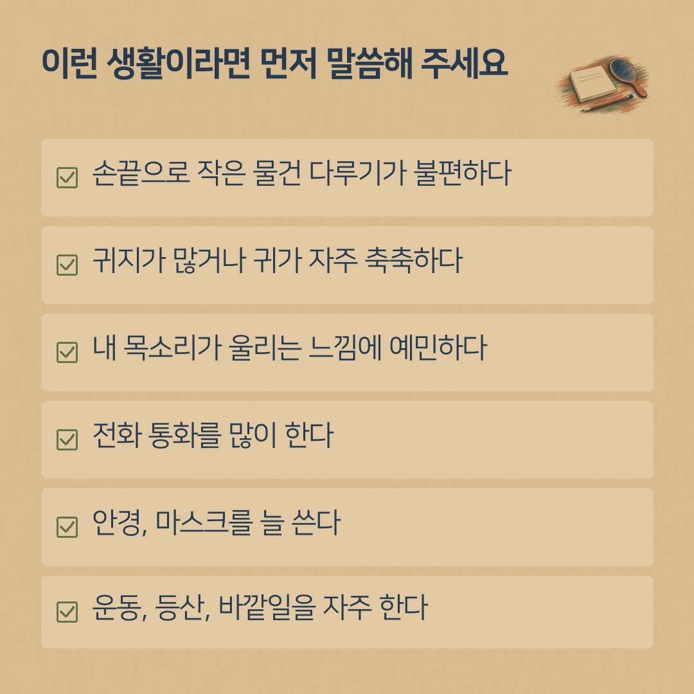
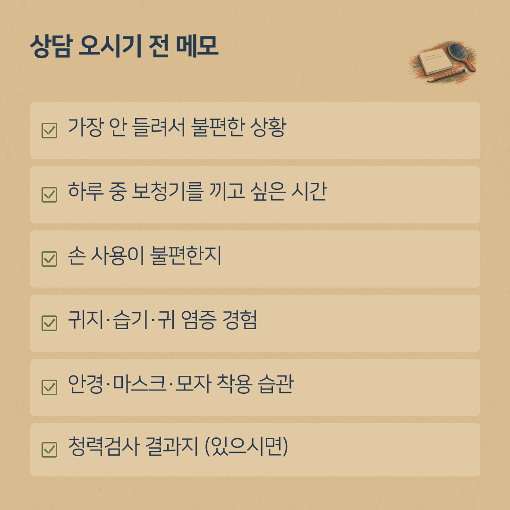

귓속형 보청기, 이런 생활이라면 상담 때 먼저 이야기해 주세요
- 귓속형은 귓구멍(바깥귀길) 안쪽이나 입구에 들어가는 형태로, 대부분 귀본을 떠서 맞춤 제작합니다(제작 기간 필요).
- 형태에 정답은 없습니다. 청력·귀 모양·생활에 맞는지가 더 중요합니다.
- 상담 때 먼저 알려 주세요: 손 사용, 귀지·습기, 내 목소리 울림, 전화 사용, 안경·마스크, 운동·바깥일.
- 귓구멍이 좁거나 굽은 경우, 필요한 출력이 큰 경우, 귀 염증이 잦은 경우, 어린이 등은 맞지 않을 수 있습니다.
상담 오시는 분들께 "귓속형으로 하고 싶어요"라는 말씀을 자주 듣습니다. 밖에서 잘 보이지 않는 형태를 원하시는 마음, 충분히 이해합니다.
다만 보청기는 형태마다 정답이 있는 것이 아니라, 그분의 청력과 귀 모양, 그리고 생활에 맞는지가 더 중요합니다. 같은 귓속형이라도 어떤 분께는 편하고, 어떤 분께는 관리가 번거로울 수 있습니다. 그래서 "이런 생활을 하신다면 상담 때 먼저 말씀해 주세요"라는 내용을 정리했습니다.
귓속형 보청기는 어떤 보청기인가요
귓속형은 귓구멍(바깥귀길) 안쪽이나 입구에 들어가는 형태입니다. 대부분 귀 모양을 본떠(귀본) 그분 귀에 맞게 만듭니다. 그래서 상담 → 귀본 뜨기 → 제작 → 맞춤 조절 순서로 진행되고, 제작 기간이 필요합니다.
귀본을 뜰 때는 귓속에 작은 솜 막음을 넣습니다. 고막에 구멍이 있었거나, 귀 수술을 받으셨거나, 지금 귀에 염증이 있으면 미리 알려 주세요. 필요하면 이비인후과에서 귀 상태를 먼저 확인합니다.
귀 뒤에 거는 귀걸이형과 비교해 "더 좋다, 덜 좋다"로 나누기보다는, 생활에 맞는 쪽을 함께 고른다고 생각해 주세요.

이런 생활이라면 먼저 말씀해 주세요
1. 손끝으로 작은 물건 다루기가 불편하신 분
귓속형은 크기가 작아서 넣고 빼는 일, 건전지를 갈거나 충전하는 일이 손에 익기까지 시간이 걸릴 수 있습니다. 손 떨림이 있거나 손가락 관절이 불편하시면 꼭 알려 주세요. 다루기 쉬운 크기와 방식을 함께 살펴봅니다.
2. 귀지가 많거나, 귀가 자주 축축하신 분
귓속형은 귓구멍 안에 들어가기 때문에 귀지와 습기의 영향을 더 받을 수 있습니다. 소리 나오는 구멍이 막히면 소리가 작아지기도 합니다. 평소 귀지가 많은 편인지, 땀을 많이 흘리시는지 말씀해 주시면 관리 방법까지 함께 안내해 드립니다.
3. 내 목소리가 울리는 느낌에 예민하신 분
귓구멍을 막는 형태일수록 내 목소리나 씹는 소리가 울려 들리는 느낌(막힌 느낌)을 받는 분이 있습니다. 처음에 이런 느낌이 신경 쓰이면 조절과 설계로 줄여 볼 수 있으니, 불편함을 그대로 말씀해 주세요.
4. 전화 통화를 많이 하시는 분
전화를 하루에 얼마나, 어느 쪽 귀로 받으시는지 알려 주세요. 휴대폰과 연결하는 기능이 필요한지도 함께 정합니다. 제품마다 기능이 달라서 상담 때 확인이 필요합니다.
5. 안경, 마스크를 늘 쓰시는 분
귀 뒤에 거는 형태는 안경다리, 마스크 끈과 겹칠 수 있습니다. 귓속형을 고민하시는 이유가 이것이라면 그대로 말씀해 주세요. 어떤 형태든 일상에서 겹치는 부분을 같이 따져 봅니다.
6. 운동, 등산, 바깥일을 자주 하시는 분
땀, 비, 먼지가 많은 환경인지 알려 주세요. 보관과 건조 방법까지 생활에 맞게 안내해 드립니다.
귓속형이 맞지 않을 수 있는 경우
- 귓구멍이 좁거나 모양이 많이 굽은 경우, 원하는 크기로 만들기 어려울 수 있습니다.
- 난청 정도에 따라 필요한 출력이 달라서, 작은 형태로는 맞추기 어려운 경우도 있습니다.
- 귀에 염증이 자주 생기거나 진물이 나는 경우에는 먼저 이비인후과 전문의에게 귀 상태를 확인받으시는 것이 좋습니다.
- 어린이는 귀가 자라면서 귓속 모양이 바뀌어, 다시 만들어야 할 수 있습니다.
- 낮은 소리는 잘 들리고 높은 소리만 잘 안 들리는 경우, 귓구멍을 막는 형태에서 먹먹한 느낌이 더 클 수 있습니다.
이런 부분은 청력검사 결과와 귀 상태를 확인한 뒤에 정확히 말씀드릴 수 있습니다.
상담 오시기 전, 메모해 두면 좋은 것
- 가장 안 들려서 불편한 상황 (대화, TV, 전화, 모임 등)
- 하루 중 보청기를 끼고 싶은 시간
- 손 사용이 불편한지 (작은 버튼, 작은 건전지)
- 귀지·습기·귀 염증 경험
- 안경·마스크·모자 착용 습관
- 청력검사 결과지 (있으시면)

형태는 상담 첫날 바로 정하지 않으셔도 됩니다. 생활 이야기를 충분히 듣고, 시연용 제품이 있으면 직접 대 보면서 천천히 정하셔도 괜찮습니다.
건강보험 지원을 받으시는 경우, 원하시는 제품이 급여 대상인지는 상담 때 함께 확인해 드립니다. 지원 순서는 보청기 지원금 받는 순서 5단계를 참고하세요.
상담 예약
전화 010-6599-0109 또는 0507-1426-0116 (두 센터 공통)
진해센터 경남 창원시 진해구 진해대로 999, 하이존빌딩 1층 108호(자은동) · 하이존 상가 지하주차장
명지서비스센터 부산 강서구 명지국제6로 99, A동 1070호 · 대방디엠시티 상가주차장
운영시간: 평일 08:30–18:30, 토요일 08:30–13:00, 일요일 휴무 · 예약 후 방문해 주세요. 오시는 길 보기
네이버 블로그에서도 보기: 귀인보청기 블로그 · English version